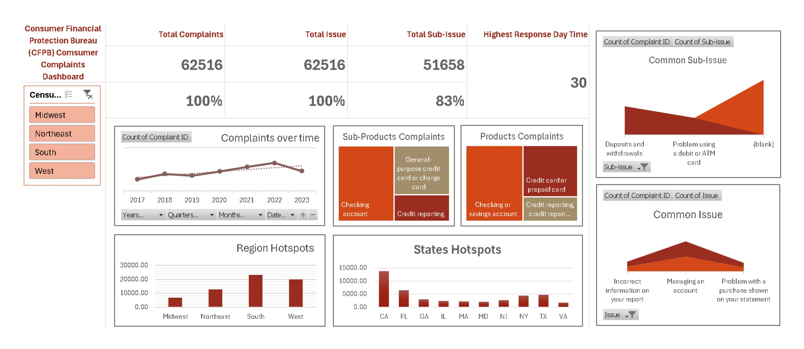
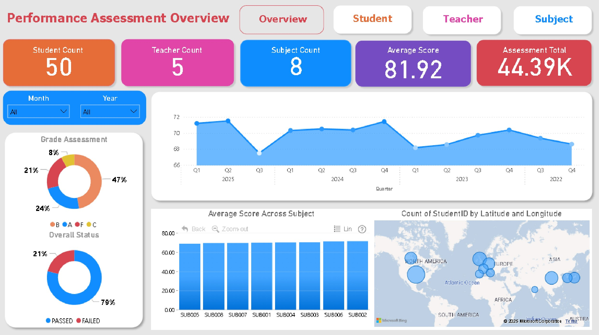
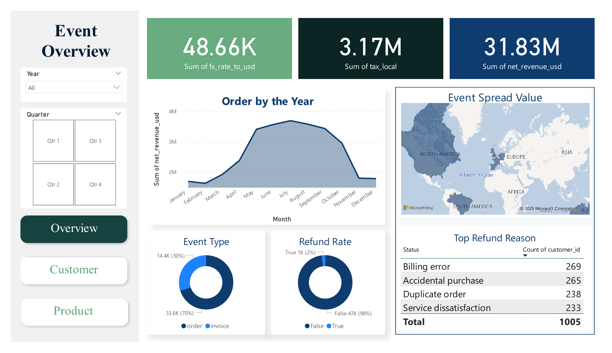
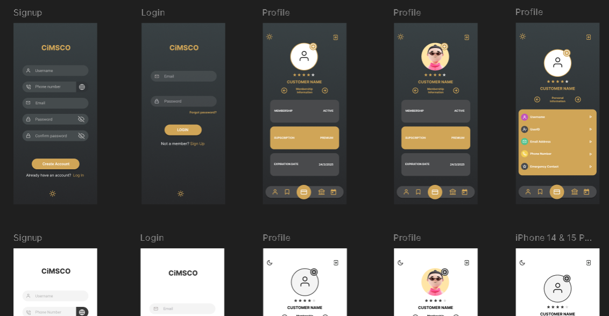
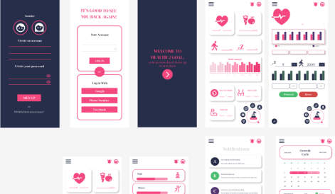
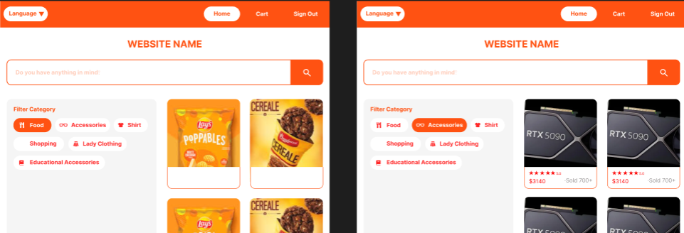

Sai Kyal Sin Tun | 赵成勇 | ไกรสร
Introduction
Hello — I'm Sai Kyal Sin Tun, a data analyst and UI/UX designer who blends data-driven thinking with human-centered design. I use SQL, Python and modern analytics tools to uncover insights and create visual stories, while crafting intuitive interfaces and prototypes in Figma and Adobe XD. Comfortable working across English, Chinese, Thai and Burmese, I enjoy turning complex problems into clear decisions and delightful experiences.
Hard Skills
Analysis Tools: Excel, PowerBI, SQL, Python, Git/GitHub
Web & UI: HTML, CSS, WordPress, Figma, Adobe XD
Design Tools: Photoshop, Illustrator, InDesign, Canva
UML & System Design: draw.io, Lucidchart — Class, Flow, Activity, Use Case diagrams
Soft Skills
- Problem solving and critical thinking
- Communication across multicultural teams
- Time management and organization
- Empathy-driven user research
Data Analysis — Summary
I focus on transforming messy datasets into clear, actionable insights. My workflow combines data cleaning with exploratory analysis, statistical summaries, and interactive dashboards to help stakeholders make data-driven decisions. I use Python (pandas), SQL, Excel and Power BI to build reproducible analyses and visualizations.
Projects

DataDNA — Consumer Financial Complaints Dataset
Exploratory analysis of consumer complaints, categorization, and trend identification with visualization outputs.

FP20 Analytic Challenge x ZoomChart (Student Assessment)
Student performance analysis and interactive visual assessment dashboards.

November 2025 — E-commerce Analytics Challenge
Sales funnel & cohort analysis for an e-commerce dataset (competition entry).

UI / UX — Summary
I design intuitive interfaces and flows that bridge user needs with business goals. I create wireframes, hi-fi prototypes and user journeys, focusing on accessibility and clarity across platforms (web, mobile, wearables).
Projects

CimSo — Golf Club Membership App (2025)
Full mobile app design for membership management, booking and club communications.

Health2Go — Multi-platform Health App
Cross-platform healthcare app with reporting, watch integration and exportable reports (Web, Watch, Phone, Word).

System Design Analysis — E-commerce UX (Admin & Customer)
User experience analysis and redesign for admin and customer flows on an e-commerce platform.